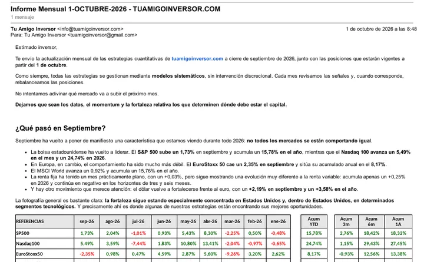

Ejemplo más reciente
Informe del 1 de octubre de 2026
Cambios de posiciones
- GEDA: sale LITE, entra MRNA
- GEN-Z: sale LRCX, entra AMD
- CRYPTO: sale DASH, entra NEAR
- ROCA, IMPULSO y HORIZONTE: sin cambios